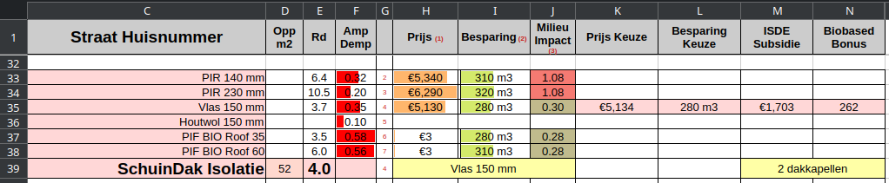
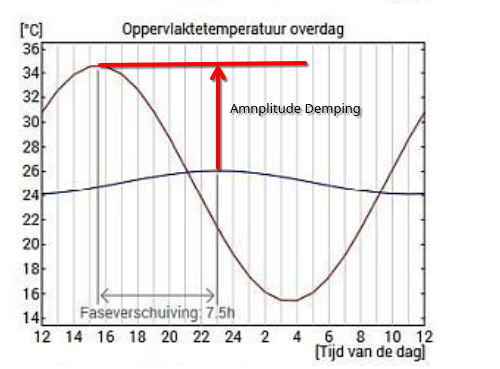

aan de hand van de dakisolatie zullen we alle velden bespreken.
Uitgangspunt is dat de huidige toestand van de woning correct is ingevuld op het basisblad (eventueel aangevuld met aanpassingen op het tabblad detail).

Eerst even een snelle uitleg:
kolom Amplitude Demping, hoe kleiner het rode balkje, hoe koeler en hoe langer het koel blijft in de zomer
kolom Besparing, hoe groter het groene balkje hoe meer gas de isolatie bespaard
kolom Milieu Impact, hoe groener het vak, hoe minder milieu-impact deze methode heeft.
D39 = het grondoppervlakte van de woning in m2
H39 = de keuzelijst van alle mogelijkheden (die we tot nu toe kennen) om een schuindak aan de binnenkant te isoleren.
Hier is dus gekozen om 150 mm Vlas te (laten) monteren als isolatie.
Door deze keuze te maken wordt regel 35 geaccentueerd en hierion verschijnen de waarden, inclusief de subsidie (die verdubbelt wordt als je meer dan 1 maatregel selecteert, zoals in de regels van RVO is beschreven) en ook de eventuele BioBased Bonus.
kolom E = Rd-waarde = de toegevoegde isolatiewaarde door het aanbrengen van deze maatregel
E39 = de totale R-waarde die ontstaat door de sandwich van de oorspronkelijke constructie en de extra isolatie.
Kolom F, slaan we even over en behandelen we helemaal aan het einde.
Prijs = een raming van de kostprijs, gebaseerd op het oppervlakte en offertes van lokale leveranciers. De oranje kleurenbalkjes vergelijken de prijs binnen één isolatiemaatregel, in dit geval dus DakIsolatie.
Besparing in m3 gas per jaar.
De groene kleurenbalkjes zijn relatief over alle maatregelen, zodat je eenvoudig het effect van de diverse maatregelen met elkaar kunt vergelijken.
Verbazingwekkend is dat de verschillende maatregelen, waarbij de Rd varieert van 3.5 naar 10.5, de besparing zo weinig varieert, van 280 m3 tot 320 m3.
Dit klopt echt en je moet hier maar eens dieper over nadenken, niet alleen waarom dit zo is,m maar vooral, wat doe ik ermee.
Je kunt het ook van de andere kant bekijken, als het 20 m3 gas per jaar extra bespaard, is dat over de levensduur van de isolatie (30 jaar) 30 * 20 = 600 m3 gas. Dit laatste is niet helemaal reëel, omdat binnen 5 jaar de verwarming zal worden overgenomen door een warmtepomp of beter en dus bespaar je maar 600 / 4 = 150 m3 gas. Zet je dat om naar Euro's, dan kom je uit op ongeveer €200 Euro. Dus waarschijnlijk niet de moeite waarde
Milieu-Impact = MKI-score (Milieu Kosten Indicator, hier per Rd=1), hoe lager deze is, hoe lager de milieu=impact van dit materiaal is. De MKI wordt gehaald uit de Nationale Milieu Database (NMD), en geeft de milieu-impact van het materiaal berekend via een Life Cycle Analysis (LCA) van het materiaal over de gehele levensduur van de woning.
(Sinds begin dit jaar is overgestapt op een verbeterde methode, nl de MKA-2, die nog niet voor alle materialen beschikbaar is, hier moet dus nog wat finetuning plaatsvinden)
ISDE subsdie, waarbij rekening is gehouden met verdubbeling door meerdere isolatiemaatregelen of een warmtepomp.
BioBased Bonus, die geldt als een isolatie product voor minstens 70% uit biobased grondstoffen bestaat én als de MKI<0.54 (Rd=1, MKA2-methode)
kolom F = Amplitude Demping. Deze factor is met name in de zomer (en alleen voor hert dak) van belang en geeft aan hoeveel warmte wordt tegengehouden.
In onderstaande figuur zie je dat buitentemperatuur binnen 24 uur, varieert van 15 naar 35 graden Celsius.
De binnentemperatuur varieert bij deze isolatie slechts 2 graden.
Dat betekent dat de temperatuur-amplitude-demping 0.2 bedraagt.
Bij een grote demping kun je het dus in de zomer dagen en soms zelfs weken comfortabel houden op een zolder.
Als we dit dus een belangrijke parameter vinden, zien we in de keuzelijst dat we het beste kunnen kiezen voor houtwol.
Wel moeten we er voor zorgen dat de warmte niet op een andere wijze (bijvoorbeeld een open raam) in de ruimte terecht komt.
Ook is het interessant om te beseffen dat een groendak een hele grote amplitude demping heeft (geen hoge isolatiewaarde).

M39 = geen dakkapellen, nu geen functie, mogelijk toekomstige uitbreiding